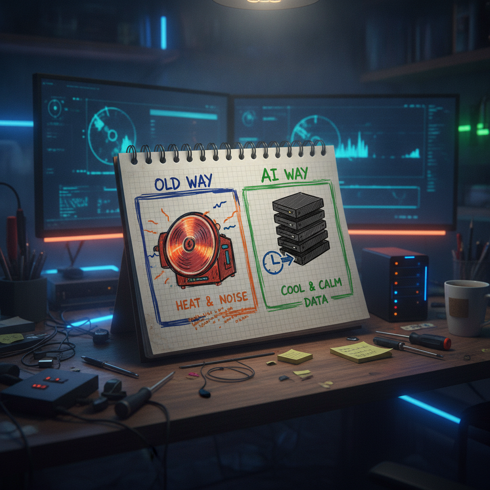

A GM Post, a Cool Idea, and a Protocol Name I Can't Quite Place
I stop on Chia posts more than I probably should admit. It is one of those ecosystems I have watched long enough that I still get a little curious jolt when someone new shows up talking about it. That is what happened here. A quick good morning post, a nod to the tech, and a phrase I had not run into before.
What was bookmarked
@bytesandblocks posted a short good morning message inviting people to check out the Chia community. The post leans on Chia's actual core idea, proof of space and time instead of proof of work, meaning the network runs on disk space rather than burning electricity chasing hashes. It also mentions something called a "new POSTm protocol," says it will change technology and wallets, and tags @chia_project along with the $XCH ticker. There are no links in the post, no docs, no thread with more detail.

Why it matters
Proof of space and time is the actual reason Chia exists. It was built as a lower energy alternative to proof of work mining, using storage instead of specialized rigs. That part of the post is grounded and true to what the project has always been about. Posts like this matter less for the technical claim and more for what they do socially: they are how new people find their way into a community, one GM at a time. Onboarding through simple, friendly posts is a real function even if the post itself is thin on substance.
Where I slow down is the "POSTm protocol" line. I have followed Chia for a while and I have not seen that specific name attached to anything from the actual project. It might be a nickname, a shorthand someone is using for an existing upgrade, or just enthusiastic phrasing that got ahead of itself. Either way, there is nothing linked to confirm what it refers to, so I am not going to guess at what it does.
The practical breakdown
What it does: functions as a community shoutout post, not a technical announcement.
Who it helps: newcomers who see a friendly, low-barrier entry point into Chia and click through to learn more.
What problem it solves: helps put Chia's actual differentiator, space and time instead of burning power, in front of new eyes.
What still needs work: the "POSTm protocol" claim has zero supporting material attached to this post. No repo, no docs, no official Chia project confirmation.
What I would test first: search the official Chia project channels and GitHub for any mention of that name before repeating it anywhere.
Where this could go next: if there is a real protocol update behind that name, it will show up with actual documentation. If not, it fades, which is fine.
Rick's take
I like that people are still out here doing simple GM posts for Chia. That is genuinely how a lot of good communities grow, one small nudge at a time, and I am glad to see @bytesandblocks putting effort into that. The proof of space and time framing is solid and worth repeating, because it is still one of the more sensible ideas in this whole space. The one thing I would gently flag is the "POSTm protocol" line. I have not seen that term from the project itself, so I am treating it as unconfirmed until something official backs it up. That does not take away from the rest of the post. It just means I would wait for the source material before repeating the specific name.
What to watch next
I would keep an eye on official Chia project accounts and their GitHub for anything that clarifies what "POSTm" is referring to, if anything. If it turns into a real, documented update, that is worth its own closer look. If it was just enthusiastic phrasing, that is fine too. Community energy is still worth something on its own.
Source and links
Source: X post by @bytesandblocks, https://x.com/i/web/status/2077274124741673163, retrieved on 2026-07-15.
External references: none included in the source post.